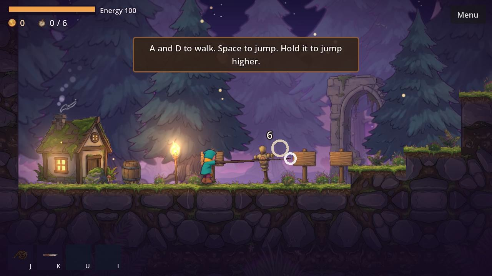
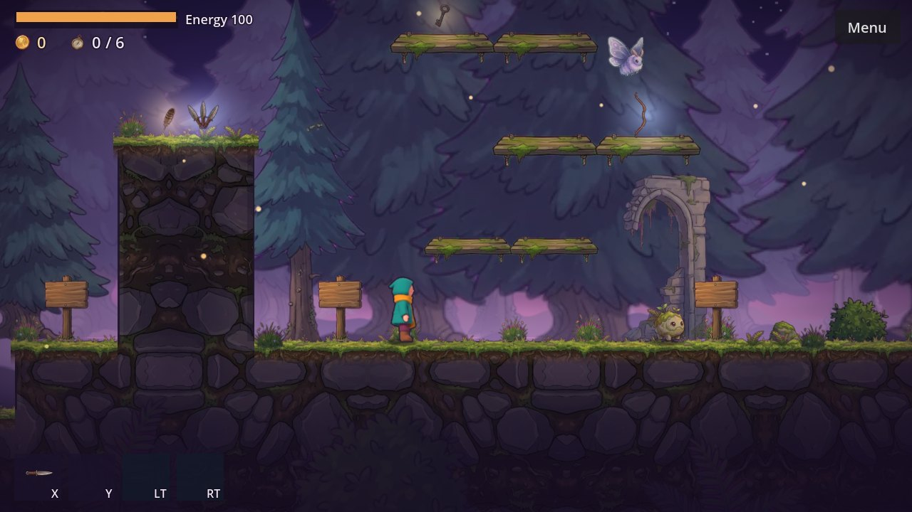
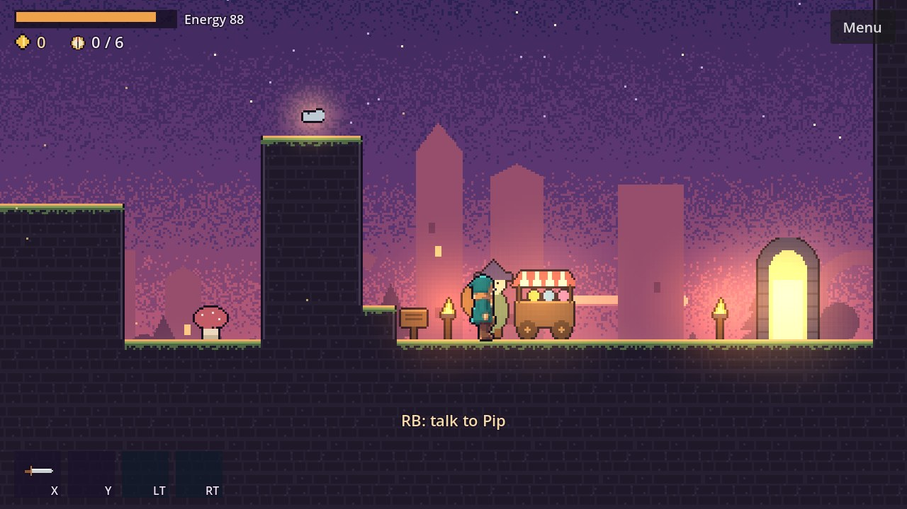

Home by Dusk
A calm, spooky painted adventure
Wren walks the Dusk Hollow at her own pace. Find keepsakes and secrets, pick up better weapons and abilities, and spend your coins at Pip's cart. Foes cost energy, never a life. When you tire, you head home by dusk with your coins.
Version 0.5.0. Release notes · Backlog
Testers: phone test for a 3D Wren. A frame counter, not the game.



What kind of game is this?
Low risk. Foes warn you before they strike and only cost energy. No bosses, no lives and no game over.
A gentle loop. Each run gathers gear. The door past Pip's cart starts another run with what you carry. Heading home resets your gear. Coins and keepsakes always stay.
Modern movement. Double jump, roll through danger, climb ledges by walking into them and drop through wooden platforms.
Gear to try. A short list of weapons and abilities for now, with more waiting. Hold two of each, each on its own button.
Things to do
- Find six keepsakes hidden around the hollow. They stay found forever.
- Break the old cracked wall and find the secret chest.
- Crack Wren's whip from a safe distance. Then try a sword, a dagger, a hammer and a bow. More weapon types join as the game grows.
- Throw knives, toss a pinecone bomb, raise a bark shield or brew a cup of tea.
- Collect coins from foes and chests and spend them at Pip's cart.
- Chain a combo and beat your best in the journal.
- Go through the door for another run and see what changes.
Controls
Keyboard
A D or arrows walk. Space jumps. L or Shift rolls. J and K swing your weapons. U and I use your abilities. E picks up, opens and talks. S + Space drops through a ledge. Tab opens the journal. Esc opens the Menu.
A D or arrows walk. Space jumps. L or Shift rolls. J and K swing your weapons. U and I use your abilities. E picks up, opens and talks. S + Space drops through a ledge. Tab opens the journal. Esc opens the Menu.
Xbox controller
Left stick or D-pad walks. A jumps. B rolls. X and Y swing your weapons. LT and RT use your abilities. RB picks up, opens and talks. Down + A drops. LB opens the journal. View or Menu opens the Menu. In menus A chooses and B goes back.
Left stick or D-pad walks. A jumps. B rolls. X and Y swing your weapons. LT and RT use your abilities. RB picks up, opens and talks. Down + A drops. LB opens the journal. View or Menu opens the Menu. In menus A chooses and B goes back.
Touch
Drag on the left half to walk, drag down to drop. Jump, Roll, two weapon buttons, two ability buttons and Use sit on the right. Menu at the top right.
Drag on the left half to walk, drag down to drop. Jump, Roll, two weapon buttons, two ability buttons and Use sit on the right. Menu at the top right.
Play with an Xbox controller
Any Xbox Wireless Controller with Bluetooth works. That is every Series X|S controller and the Xbox One controllers made since 2016. If the plastic around the Xbox button matches the face of the controller, it has Bluetooth. Other controllers that your phone or browser sees as a standard gamepad use the same buttons.
On Android
- Hold the Xbox button to turn the controller on.
- Hold the small Pair button on top for 3 seconds, until the Xbox button flashes fast.
- On your phone, open Settings, then Connected devices, then Pair new device.
- Tap Xbox Wireless Controller. The Xbox button stays lit when it is connected.
- Open Home by Dusk. The touch buttons hide as soon as you use the controller.
In your browser
- Connect the controller to your computer with a USB cable or Bluetooth.
- Open Play in your browser. Chrome, Edge, Firefox and Safari all work.
- Press any button once after the game loads, so the browser sees the controller.
Install on Android
- Tap Download for Android on this page.
- Open the file. Allow installs from your browser if your phone asks.
- Tap Install, then Open.
- New versions install over older ones and keep your saves.
Feedback
Tell us what you think. Useful things to note:
- How walking, jumping, rolling and climbing feel.
- Which weapons and abilities feel good and which feel weak.
- Whether foes feel too easy or too pushy.
- Anything that looks wrong, with a screenshot.
- Your phone or browser.